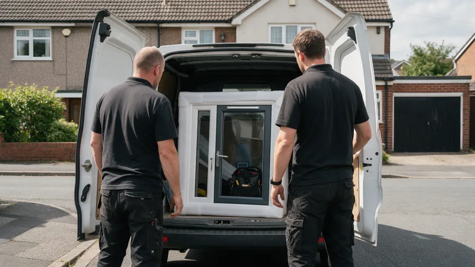

About
A firm that does not exist.
Sashmoor Windows and Doors is invented. There is no van, no workshop and nobody to ring. It is a demo built by Clockwork AI to show a real window and door firm what a site looks like when everything on it is written properly. The story below is made up, and so is everybody in it.
The made up version
Three of us: two on the tools and one on the phone and the measure. The name came from a sash and a bit of moorland, which is roughly the range of the work round here, from a Victorian box frame in Lymm to a house of grey uPVC on an estate in Great Sankey.
Most of the work arrives as somebody who has already had one quote and did not enjoy it. So the way this made up firm works is built around that: somebody measures, you get it in writing, nobody comes back at seven in the evening with a laptop and a discount that expires at nine.
How we would like to be judged
By whether the house still looks like your house afterwards, and by whether anything on the day surprised you. Fitting a window is not the difficult part of this trade. Measuring it properly, saying plainly what will and will not match, and clearing up afterwards is the part that makes the difference.
The other half of it is repair before replace. A cloudy unit, a dropped hinge or a worn gearbox is a part and an hour far more often than it is a new window, and we would rather do the small job and be the firm you ring in ten years.
What we will tell you no about
Conservatory roofs and roof lanterns, which are their own trade. Garage doors and shutters. Anything structural, where you want a builder before you want us. And a window somebody has bought online that is the wrong size for the hole, where fitting it badly would be worse than not fitting it at all.

Generated photoGenerated for this demo. Nobody in it is a real person and the van carries no name.
The three of us
Invented people.
Eddie
Twenty odd years fitting, and the one who will take an old frame out whole when cutting it out would be quicker. Does most of the bays and all of the sash work.
Nadiya
Doors, bifolds and anything with a threshold detail. Can tell from the way somebody describes locking their back door which of the three usual faults it is.
Rob
Measures, quotes and answers the phone. Asks what the window is actually doing before anybody talks about replacing anything, which saves more jobs than it loses.
Made up for this demo. None of these people exist.
About this demo
What you are actually looking at.
Everything is fictional
The firm, the people, the jobs, the reviews and the pictures. The phone number is from the range Ofcom keeps for television and film, so it rings nobody, and the email address ends in .example, which cannot receive anything.
No prices and no claims
On purpose. There are no prices on this site, nothing claimed about schemes or approvals, and nothing about how long the firm has been going, because inventing any of that on a demo would be making things up about a firm that does not exist.
Nothing is sent or saved
The quote form and the chat both run entirely in your browser. They check what you type, show you a confirmation and then forget it. No server, nothing stored, nobody called.
Want the same thing for a real firm? The Clockwork number is in the bar at the top of every page.
Seen enough of the demo?
Have a look at the work, the advice or the quote form. Or ring Clockwork on the number in the bar at the top.